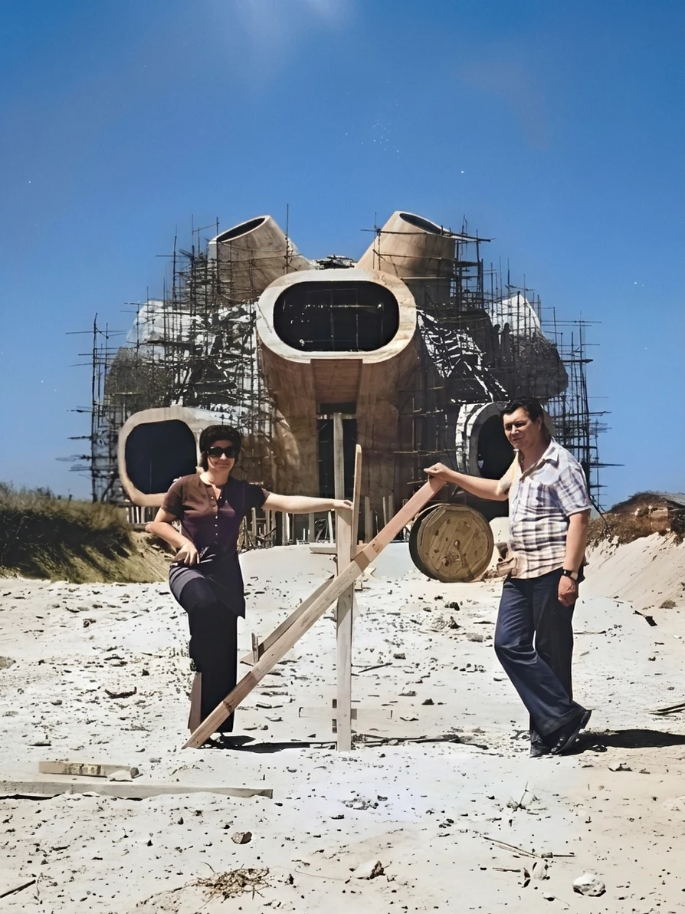

The Denes group
The “Denes” group, formed in 1953 by architects, painters, and sculptors, conceptualizes its program of action based on the principles of “freedom of personal expression” and “using contemporary art achievements from the world to create our contemporary art.” At the Third Union of Visual Artists of Yugoslavia (Congress, May 1953, Ohrid), the group proposed approaching the tendencies of the more developed art centers from the Yugoslav areas, with the aim of a more visible “affirmation of individuals,” a clearer articulation of the “different artistic currents” and an “active struggle of different views” (Протуѓер, 1983: 8). In addition to the need to group similar author views, what significantly moves the discourse of art from the passive domain is the call for the creation of a contemporary art audience, and the concept of everyone’s participation in the field of cultural and social activity. Their commitments are based on the synthesis of the three branches of the creative fields (architecture, sculpture and painting), counting on their overlapping aesthetic and social reciprocity.
In their Manifesto, the artists were named as “art workers,” whose living in a socialist society was not a prerequisite for creating “socialist art.” (Петковски, 1983: 32). The critical attitude expressed about the types of “struggle” through art essentially underlines the necessity of different opinions, different aesthetic views, the articulation of which would take place simultaneously with the socialist construction of the Republic (Протуѓер во Петковски 1989: 227). One of the founders of the Group – Borko Lazeski, clarifies that “our motifs” should not be taken “as a guarantee for the content of the artwork,” but as “painting from which Macedonia radiates in its essence” (Лазески, 1954). Advocating for non-figurative art (a term preferred to abstraction), Lazeski traces the authority of art as a problematic category waiting to be (individually) worked out.
The theoretical-polemical and practical activity of the “Denes” group (1953–1955), the open and sharp questioning of democratization and freedom of thought, the radical critical attitudes about the position of art in society, created “engaged polemical thought,” about the contexts for the possibilities of the “revolution in the social sphere” to be “touched and fertilized by the revolution in the sphere of art” (Ѓурчинов, 1983: 18–20). The short activity of the group, its ephemerality, also had its advantages in the later independent construction of the individual artistic syntagms of the individual authors who avoided the so-called “sclerotic challenge of ‘academicism’ and the prescription of group exclusivity.” The authors of the “Denes” group were the builders of “aesthetic pluralism” (Ѓурчинов, 1983: 17–23; Величковски, 2013: 16).
Lazeski and the public mural
In the hotbed of great ideological confrontations in Yugoslavia, at the time of deciding “for or against Krleža,” Lazeski felt close to Krleža’s ideas about free creative expression. In the conceptual program of the Belgrade group “Life” [“Život“] Lazeski participates in the production of small-format graphics with a social sign and motifs taken from the everyday and modest life of workers, reinterpreted through the prism of a restless, revolted and young artist (Ibid.,1979: 8-9). In the drawings from the fourth decade: Third Class (1936), Workers Have Lunch (1936), in their title sub-layers we perceive the author’s preoccupation with class differences and the question of class consciousness.
The concept of class consciousness originates from the hypotheses of Karl Marx, who believed that if the proletariat – the working class saw the potential of association, the group with common interests could undertake revolutionary feats and contribute to the overthrow of the dominant capitalist class (Borland, 2008: 134; Lukács,1971: 46–47). According to post-Marxist theories and neo-philosophy, collective consciousness can only be achieved through individual consciousness and free individual action (Gurbuz, 2008: 142–143). Consciousness and visual language could find the common thread as a “transparent cage” only if they are fully contained in the world they enclose, the very exterior from which one cannot escape (Meillassoux, 2008: 14–15). Then, art depicts reality which at the same time condemns it (Marcuse, 1978: 55).
As a pedagogue and theorist, Lazeski interprets the relationship between art, society and social classes from an extremely dialectical perspective. In his lecture on “Art and Society” from 1937, he talks about art that has the right to speak about social reality and people’s lives, but art that unites members of the working class (in Marx’s sense of class consciousness), art that preaches faith and great humanity. In Lazeski, the urge and the need to depict a scene of mass and collective action can be seen in the small-format drawings: Demonstrations in Belgrade (1935/37) and House and Hoe (1936/37). Both examples show the potential for compositionally constructing mass scenes of monumental proportions, later manifested in the large frescoes of 1950 and 1951–56. Undoubtedly, Lazeski’s early drawings show the evolution of his artistic expression, set as a problematic category, as an “artistic dialectic” and as an “ideological political maturation” that translates the thematic preoccupation into a representational construction (Абаџиева-Димитрова, 1979: 10).
This approach is not far from the concepts of Marcuse who, discussing the political potential of art, claims that it is found in art itself, in the aesthetic form as such. Lazeski locates the search for a new autonomy of expression, in Marcuse’s sense, in the revolutionary transformation, in the radical change of the style or in the technique, in the juxtaposition of the prevailing freedom and the rebelliousness of the subversive potential (Marcuse, 1978: ix-xi). According to Abadzieva-Dimitrova, “revolutionary from the earliest youth, Lazeski fights with the forces of fate, with the exploiters before the war, with the fascists during the war, with the misconceptions and perceptions of the environment, with the natural element” (1979: 5).
Immediately after returning from Paris, Lazeski creates the monumental mural Fresco for NOV (1951–1956). We see his initiatory attempts to socialize and democratize art in the effort to expand the aesthetic dimension of the work of art in the field of social practices, saying that: “The mural is my address to the people. It is common property, a kind of mass media” (Мирчевски in Абаџиева-Димитрова, 1979: 25). Made in the fresco buono technique, as a horizontal compositional panorama and a semantic chronograph, the fresco meant “a model for a new art: public, monumental, with a new social function” (Петковски,1983: 35). In addition to the essential pretext for transposing the engaged content – the historical awareness of the meaning of NOV, the motives for the realization of the Fresco for NOV are guided by six fundamental principles, and the complete narrative is a structural fusion of the content with the form (Marcuse, 1978: 8, 19) in a studious, energetic and poignant portrayal of the collective dimension of suffering, resistance and victory, the incarnation of victory (Абаџиева-Димитрова, 1979: 25–29).
For Lazeski, the installation of this fresco meant a search for his artistic truth, a testimony to the historical events of this area and of this country, a document from the time of our revolution (Николовски 1957: 10–11; Абаџиева-Димитрова 1979: 36). This achievement gave “a significant contribution to the breakthrough of new artistic endeavors in contemporary Macedonian painting, which at the end of the decade was stimulated precisely by the characteristics of this fresco”. It became “a model for public, monumental art, which had more than an aesthetic function, its purpose was to realize the social function of art” (Петковски, 1984: 28).

Grabuloski and the Makedonium
The work of the Macedonian sculptor Jordan Grabuloski (1925–1986) perhaps most consistently embodies the ideological program of the “Denes” group. The monument Ilinden (or Macedonium) (1972–1974), near Kruševo (collaboration with Iskra Grabul), is an example of the realization of the expected synthesis of creative disciplines (sculpture, architecture, painting) with a clear aspiration towards the purification of modern art, a language and concept that communicates through public, monumental art. Plastically rendered as a spatial structure, a functional spatial unity, as a “radiating ambience,” the shape itself is the bearer of a narrative (Петковски, 1977: 35; 1989: 253). The purpose of the monument is “the spread of modern art” through the efforts of political thought (Ibid., 1989: 253-254).
Sources
Tatjana Filipovska and Natali Rajchinovska-Pavleska, “The Social Context of the Dialectical Structure in the Macedonian Art-Modernist Discourse.” Annual of the Faculty of Philosophy in Skopje 78, no. 1 (2025), pp. 175–190. Original article.
This excerpt draws from pp. 181–184. Muzej shortened the headings, lightly edited punctuation and spacing, and omitted the footnotes from this edition. CC BY 4.0.
Read the complete English paper, including footnotes and bibliography.
Dimitar Kondovski, cover design for Denes 1953–1983. Art Gallery, Skopje, 1983. ZaUm Archive.
Iskra and Jordan Grabuloski at the Makedonium construction site, 1973. Archival photograph published by Ohrid1.